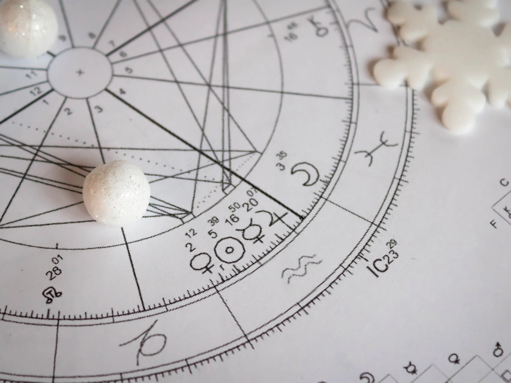
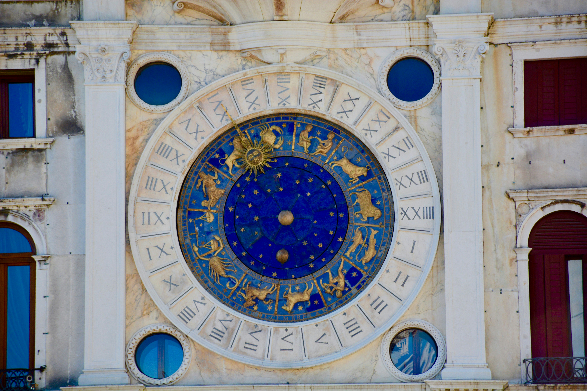

La carta astral es un mapa que explica la personalidad de una persona, teniendo en cuenta la posición de los planetas, el sol y la luna en relación con la Tierra. Ofreceremos una lectura personalizada de la carta astral, junto con respuestas a todas las dudas que surjan.
¡Próximamente!
Brindaremos todos los domingos por la noche el horóscopo de todos los signos. Tener en cuenta que el horóscopo no es algo fijo, se debe dar atención a aquello que le resuene.
Horóscopo Semanal
La numerología es tu llave para desbloquear el misterio de tu vida. Con solo tus números de nacimiento y nombre, descubre tus fortalezas, desafíos y oportunidades futuras. ¡Descubre tu verdadero potencial!

Numerología
Signos
La astrología y signos zodiacales siempre han suscitado interés en el ser humano desde la antigüedad. La influencia que los cuerpos celestes ejercen sobre la personalidad y el destino tiene especial importancia en la vida de las personas. Todo esto está marcado por el día en el que se nace, de forma que se asignará un signo u otro.
Cada uno tiene unas fortalezas y elementos que pueden influir en la personalidad y en cómo se interactúa con el resto de las personas
Existen un total de doce signos del Zodiaco en el mundo occidental: Aries, Tauro, Géminis, Cáncer, Leo, Virgo, Libra, Escorpio, Sagitario, Capricornio, Acuario y Piscis . Todos ellos guardan unas características propias, que marcan la personalidad de cada uno.
Aries
21 de marzo — 20 de abril
Llenos de energía y entusiasmo por la vida. Aventureros por naturaleza, les encantan los retos, la libertad y las nuevas ideas, por lo que nunca tienen miedo a los comienzos o nuevas etapas. Son líderes y prefieren dar órdenes en vez de recibirlas. Suelen ser tercos e inquietos. Es muy fácil que malinterpreten algo y se ofendan rápido. Es complicado hacer las paces con ellos. Siempre lucharán si creen que la causa merece la pena.
Tauro
21 de abril — 21 de mayo
Tienen una gran fuerza de voluntad, son prácticos y decididos en la toma de decisiones. Suelen ser personas estables y conservadoras y no dudan en seguir a un líder si les despierta confianza. Suelen respetar las leyes y normas. El hecho de que tengan entusiasmo por la rutina y la continuidad hace que sean algo tozudos y de ideas fijas. No suelen hundirse en las dificultades y siempre salen adelante. Amantes de la buena comida, bebida y distintos placeres de la vida.
Géminis
22 de mayo — 22 de junio
Carácter doble, complejo y contradictorio. Empiezan con entusiasmo nuevas aventuras, pero tienden a aburrirse rápido por la falta de constancia. Son personas cariñosas, amables y generosas , aunque tienen algo de mentirosos si quieren obtener algo. Suelen ser personas que se desaniman con facilidad ante las dificultades, por lo que necesitan escuchar halagos y recibir atención. Inteligencia y capacidad para aprender. Ingeniosos y muy comunicativos
Cáncer
23 de Junio — 22 de Julio
Son personas complicadas de clasificar, si se atiende a su carácter. Los hay tímidos y aburridos , pero también brillantes y famosos. De hecho, algunos presentan una alta capacidad literaria y artística, gracias a su capacidad imaginativa. Les encanta ser extrovertidos, pero también tienen tendencia a retraerse. El hogar es lo más importante para ellos, por la seguridad y el calor que encuentran en él.
Leo
23 de Julio — 22 de Agosto
Es el signo más dominante del Zodiaco. Es creativo y extrovertido. Tienen ambición, fuerza, valentía y seguridad en sus capacidades. No temen a los obstáculos y suelen ser buenos, idealistas e inteligentes. Para los Leo , el lujo y el poder están entre sus gustos. Asimismo, son capaces de utilizar trucos y mentiras para desacreditar a sus enemigos. A veces, también pueden caer en la superioridad y la prepotencia.
Virgo
23 de Agosto — 22 de Septiembre
Es el único signo zodiacal representado por una mujer. Los Virgo son observadores, pacientes y les cuesta hacer amigos por su carácter frío que muestran a veces. A pesar de ello tienen encanto y suelen ayudar a los demás cuando se presenta un problema. El método, el estudio y la lógica predominan en ellos, por eso les gusta aprender siempre, así como tener un análisis de la situación. Tanto se paran a pensar que a veces pueden retrasar la conclusión de los proyectos más complicados que llevan a cabo. Son intuitivos y capaces de ver todos los lados de un argumento.
Libra
23 de Septiembre — 22 de Octubre
El signo del Zodiaco más civilizado. Tienen encanto, elegancia, buen gusto y son amables y pacíficos, por lo que no es raro que ante conflictos sean imparciales y muestren su rechazo a ellos. Valoran el esfuerzo de los demás y les gusta trabajar en equipo. El lado negativo de Libra es que de lo curiosos que son a veces se entrometen en la vida de los demás . Están en contra de la rutina, y una vez que tengan una opinión de algo no les gusta que se les contradiga.
Escorpio
23 de Octubre — 22 de Noviembre
Un Escorpio es una persona tranquila que parece alejada de la realidad, aunque nunca dejan de observar todo a su alrededor con el ojo crítico. Tienen mucha fuerza de voluntad y muestran tenacidad , pero también les afecta al estado de ánimo las circunstancias que les rodean. Suelen ser críticos y esto les lleva, a veces, a ser algo resentidos con los demás. Sin embargo son excelentes amigos de aquellos a los que consideran que merecen su respeto.
Sagitario
23 de Noviembre — 22 de Diciembre
Sagitario es el signo más positivo de todo el Zodiaco . Cuando las cosas se ponen complicadas un Sagitario siempre sacará la mejor versión y se olvidará de la negatividad. Entre sus mejores características están las de ser buenos organizadores y abarcar nuevos proyectos y aprender cosas nuevas. El lado negativo es el genio que pueden mostrar a veces, sobre todo cuando detectan que alguien no va a su ritmo. Muchas veces también son exigentes con los demás , porque cuando un objetivo se les pone enfrente no dudan en sacrificarse.
Capricornio
23 de Diciembre — 21 de Enero
Estabilidad, seguridad y tranquilidad es lo que mejor define a un Capricornio. Son personas justas y exigentes con los demás, porque también lo son con ellos mismos. Suelen perder el control de sus emociones, por lo que es fácil que sean pesimistas y melancólicos, pero siempre tratan de buscar ayuda. Por eso es recomendable que mantengan la estabilidad emocional a través de la meditación, respiración o actividades que les ayuden a relajarse.
Acuario
22 de Enero — 20 de Febrero
Los Acuario tienen una personalidad fuerte y atractiva, pero hay dos tipos: los que son tímidos, sensibles y pacientes; y los que son exuberantes, vivos y frívolos. Eso sí, ambos son honestos y no dudarán en cambiar su opinión si estaban equivocados. Es el signo más tolerante de los doce, pero tampoco les gusta pertenecer a la multitud. Muchas veces sienten la necesidad de retirarse para meditar. No hacen amigos con facilidad, a pesar de la personalidad abierta que tienen.
Piscis
21 de Febrero — 19 de Marzo
Son tranquilos, amables y pacientes. Los Piscis son sensibles a los sentimientos de los demás y responden con simpatía al tacto y al sufrimiento. Son queridos por el resto de los signos, debido al carácter afable, cariñoso y amable. Les preocupan más los problemas de los demás que los suyos propios. Eso sí, les cuesta mucho luchar por el poder establecido. Son creativos y artísticos.
Planetas
La astrología considera que la humanidad no sólo está influenciada por los factores hereditarios y por el medio ambiente, sino también por el estado de nuestro sistema solar en el momento del nacimiento. Los planetas se consideran las fuerzas básicas de la vida, las herramientas que utilizamos para vivir, así como la base de nuestra misma sustancia. Estas fuerzas planetarias toman distintas formas, dependiendo de su ubicación en el zodíaco y de la manera en que se relacionan entre ellas.
Los aspectos que se forman entre los planetas describen estas relaciones; la posición de los planetas en relación con el lugar de nacimiento nos habla de su expresión en las esferas de la vida descriptas por las casas astrológicas.
Interpretando el rol de estos actores (los planetas) y sus cualidades (los elementos, signos y casas) y creando una síntesis, la astrología puede presentar un cuadro completo y comprensivo de la persona y su potencial, basado en el horóscopo natal.
En la astrología hay 10 planetas, los cuales incluyen al Sol y la Luna, conocidos como las luminarias. Dichos planetas no incluyen a la Tierra. A su vez, cada planeta corresponde con un signo y con una casa.

Sol
Signo equivalente: Leo
El Sol habla de núcleo real de la persona, el sí mismo interior, aquello que es de importancia central. También nos muestra la vitalidad general y la habilidad para auto afirmarse, describe la tonalidad general del ser que colorea todo lo demás.
Luna
Signo equivalente: Cáncer
La Luna representa nuestros sentimientos y emociones, la receptividad, la imaginación y la tonalidad básica de los sentimientos de la persona. También tiene un efecto sobre el sentido del ritmo, el tiempo y la oportunidad, influye sobre nuestra adaptabilidad al cambio, nuestra movilidad y versatilidad.
Mercurio
Signos equivalentes: Géminis y Virgo
Mercurio representa a la razón, racionabilidad (sentido común), aquello que es racional. Simboliza la palabra hablada y escrita, a la manera de poner orden, sopesar y evaluar, al proceso y a las habilidades de aprendizaje.
Venus
Signos equivalentes: Libra y Tauro
Venus nos da el sentido de la belleza, el disfrute del placer, la conciencia estética, amor por la armonía, la sociabilidad, la obtención de placer en las relaciones y el erotismo.
Marte
Signo equivalente: Aries
Marte representa la energía y el instinto de una persona, su coraje, determinación, la libertad del impulso espontáneo. También describe la prontitud a la acción, la manera en que uno emprende las cosas así como la simple agresión.
Júpiter
Signo equivalente: Sagitario
La búsqueda de propósito y significado individual, el optimismo, la esperanza y el sentido de justicia están representados por Júpiter. También la fe, la filosofía básica de la vida, el esfuerzo por crecer espiritualmente y la expansión.
Saturno
Signo equivalente: Capricornio
Saturno muestra cómo experimentamos "la realidad", dónde encontramos resistencia y descubrimos nuestras limitaciones. Representa la convicción consciente y moral, las leyes y las reglas que elegimos obedecer. También habla de nuestro poder para tolerar y la habilidad para concentrar, da cualidades como la honestidad, la cautela y la reserva.
Urano
Signo equivalente: Acuario
Urano simboliza la intuición, transmite la inspiración repentina y la comprensión instantánea. La apertura por todo lo nuevo, desconocido e inusual. También se lo asocia con una suerte de rebeldía obstinada. Se dice que es representativo de la astrología.
Neptuno
Signo equivalente: Piscis
Este planeta otorga lo suprasensorial, abre las puertas a la experiencia mística y a lo trascendental. En este nivel es difícil discernir dónde la percepción se confunde con la decepción, la ilusión y las falsas apariencias, y por lo tanto Neptuno está asociado con todas estas, con las drogas y todo tipo de pseudo realidades.
Plutón
Signo equivalente: Escorpio
Plutón describe cómo manejamos el poder, personal y no personal, ya sea sufriendo el poder de los demás o ejerciéndolo nosotros mismos. Describe cómo vamos al encuentro de lo demoníaco y lo mágico, nuestro poder de regeneración y nuestra capacidad de cambio radical y de renacimiento: los ciclos de muerte y transformación.
¡Conocé cuál es tu Signo Ascendente!
El Signo Ascendente es el signo del zodiaco o constelación que se alzaba en el horizonte oriental en el momento exacto del nacimiento. Representa nuestro yo externo, cómo nos ven los otros, la primera impresión que damos y cómo nos proyectamos a los demás. Pero también nos habla de la apariencia física, de la infancia y de cómo iniciamos relaciones o viajes
¡Este espacio es para vos!
Podés comunicarte con nosotros llenando el formulario y te contactaremos lo mas pronto posible. Dejanos tu consulta, idea, propuesta, comentario, ¡Siempre es bienvenido!